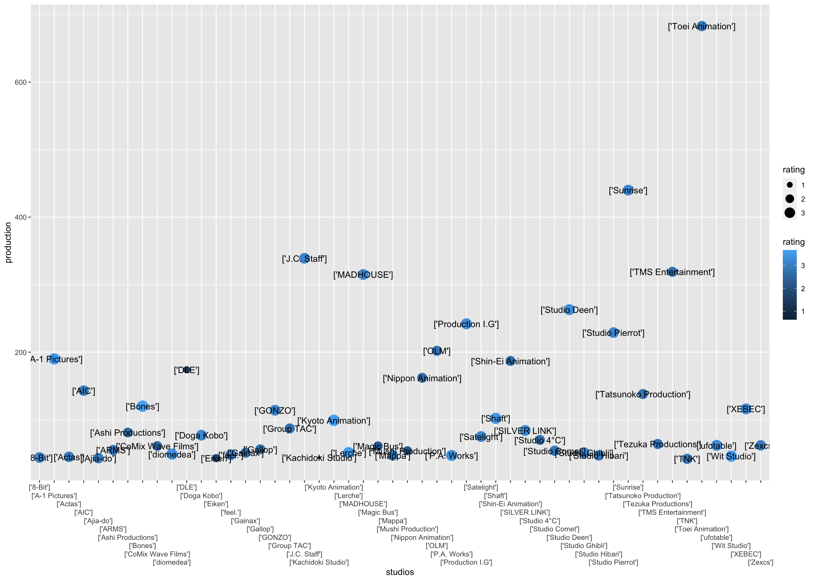
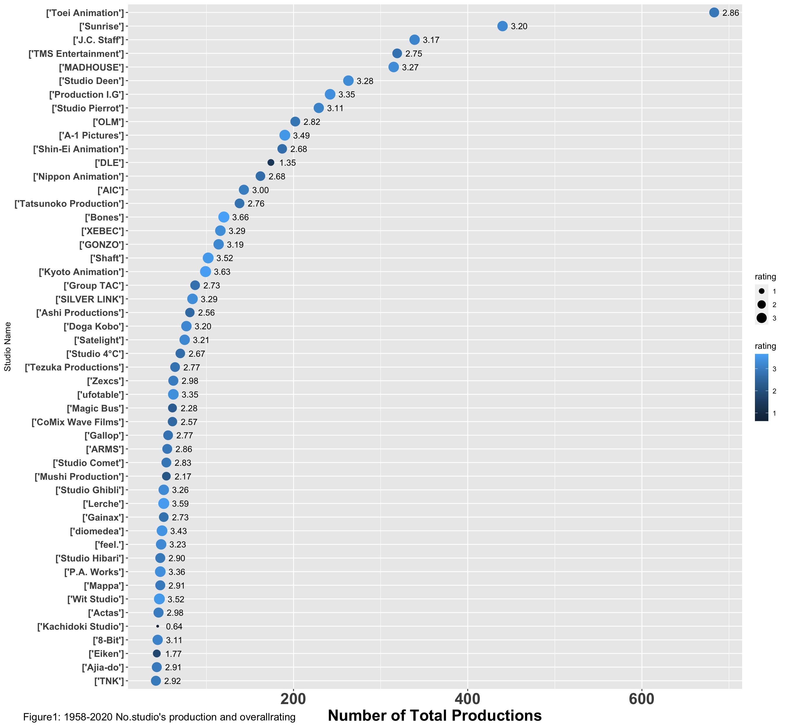
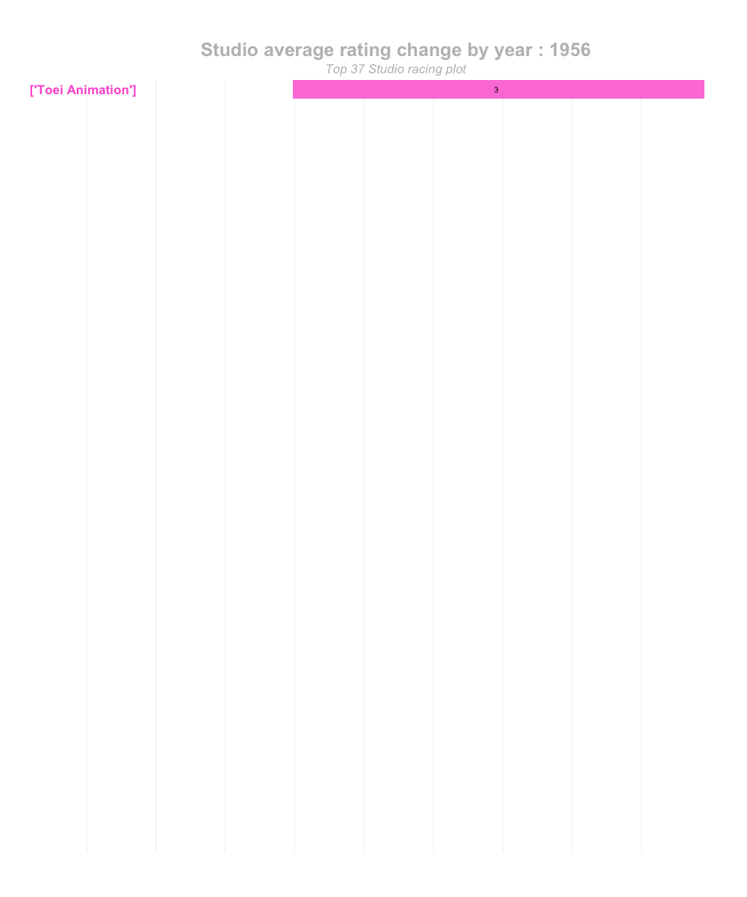
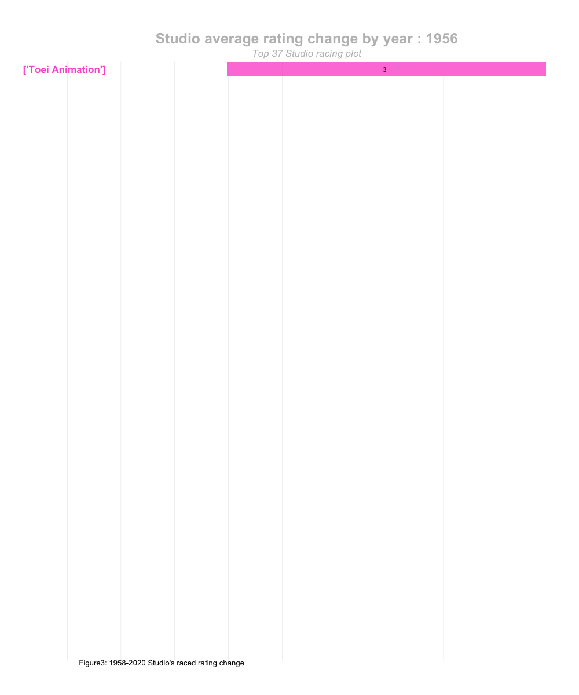

Part 1 Understanding the data
First let us load the data, a quick way to do is simply click the raw data folder from the files section and import. Another way is by code shows as below:
library(readr)
anime <- read_csv("raw data/anime.csv")
head(anime)## # A tibble: 6 x 18
## title mediaType eps duration ongoing startYr finishYr sznOfRelease
## <chr> <chr> <dbl> <dbl> <lgl> <dbl> <dbl> <chr>
## 1 Full… TV 64 NA FALSE 2009 2010 Spring
## 2 your… Movie 1 107 FALSE 2016 2016 <NA>
## 3 A Si… Movie 1 130 FALSE 2016 2016 <NA>
## 4 Haik… TV 10 NA FALSE 2016 2016 Fall
## 5 Atta… TV 10 NA FALSE 2019 2019 Spring
## 6 Demo… TV 26 NA FALSE 2019 2019 Spring
## # … with 10 more variables: description <chr>, studios <chr>, tags <chr>,
## # contentWarn <chr>, watched <dbl>, watching <dbl>, wantWatch <dbl>,
## # dropped <dbl>, rating <dbl>, votes <dbl>library(tidyverse)
library(ggplot2)
glimpse(anime)
summary(anime$votes)
class(anime$votes)
#change all [] to NA
is.na(anime) <- anime == "[]"
#set new data frame to keep the original
anime1 <- anime
summary(anime$startYr)
#removing special character
gsub("'", "", anime1$studios)
gsub("\\[", "", anime1$studios)
gsub("\\]", "", anime1$studios)
#Froming a table of studio and the amount of production
studio <- aggregate(anime$studios, by = list(anime$studios), FUN = length)
colnames(studio) <- c("studios", "production")
#set Na to 0
anime1$rating[is.na(anime1$rating)] <- 0
anime1$studios[is.na(anime1$studios)] <- 0
# create overall average rating of each studio
studiorate <- aggregate(anime1[, 17], list(anime1$studios), mean)
colnames(studiorate) <- c("studios", "rating")
#merge two table
studioall <- merge(studio,studiorate, by = "studios", all = TRUE)
#only keep top 50 production studios
library(data.table)
studiotop50 <- data.table(studioall, key = "production")
studiotop50 <- studiotop50 %>%
arrange(desc(production)) %>%
slice (1:50)studio1959_2020 <-
ggplot(data = studiotop50, mapping = aes(x = production,
y = reorder (studios, production))) +
geom_point(aes(size = rating, colour = rating, check_overlap = TRUE)) +
geom_text(aes(label = sprintf("%.2f",rating),hjust = -0.5),frontface="bold")## Warning: Ignoring unknown aesthetics: check_overlap## Warning: Ignoring unknown parameters: frontfaceplot <- studio1959_2020 + scale_x_discrete(guide = guide_axis(n.dodge = 5)) +
scale_x_continuous("Number of Total Production") + theme(axis.text.y = element_text(size = 12, face = "bold"),
axis.title.x = element_text(size = 12, face = "bold"),
axis.text.x = element_text(size = 12, face = "bold"))## Scale for 'x' is already present. Adding another scale for 'x', which will
## replace the existing scale.print(plot + labs(y = "Studio Name"))
studio1959_2020 <-
ggplot(data = studiotop50, mapping = aes(x = rating,
y = reorder (studios, rating))) +
geom_point(aes(size = production, colour = rating, check_overlap = TRUE)) +
geom_text(aes(label = production),hjust = -0.5) +
geom_text(aes(label = sprintf("%.2f",rating),hjust = +1.5))## Warning: Ignoring unknown aesthetics: check_overlapplot1 <- studio1959_2020 + scale_x_discrete(guide = guide_axis(n.dodge = 5)) +
scale_x_continuous("rating") ## Scale for 'x' is already present. Adding another scale for 'x', which will
## replace the existing scale.print(plot1)
Since the first recorded studio starting at 1958, thus
summary(studiotop50$rating)
studiotop37r <- studiotop50 %>%
arrange(desc(rating)) %>%
##after looking at the code, find out how many is below the 2.75 lower quartile
slice (1:37)
selectstudio <- anime1 %>% select(title, startYr, studios, rating)
selectstudioall <- merge(studiotop37r, selectstudio,by = "studios", all = TRUE)
selectstudioclean <- na.omit(selectstudioall)
colnames(selectstudioclean) <- c("studios", "production","avg_rating","title","startyr","rating")
newavg <- selectstudioclean %>% select(studios, rating, production, avg_rating,startyr)
newavg1 <- aggregate(newavg[, 2:4], list(newavg$studios, newavg$startyr), mean)
colnames(newavg1) <- c("studios","startyr","rating", "production","avg_rating")summary(selectstudioclean)## studios production avg_rating title
## Length:4857 Min. : 42.0 Min. :2.756 Length:4857
## Class :character 1st Qu.: 99.0 1st Qu.:2.864 Class :character
## Mode :character Median :229.0 Median :3.196 Mode :character
## Mean :265.9 Mean :3.148
## 3rd Qu.:339.0 3rd Qu.:3.276
## Max. :683.0 Max. :3.661
## startyr rating
## Min. :1956 Min. :0.000
## 1st Qu.:1999 1st Qu.:2.732
## Median :2008 Median :3.322
## Mean :2005 Mean :3.166
## 3rd Qu.:2014 3rd Qu.:3.852
## Max. :2022 Max. :4.702library(gganimate)
library(av)
#create ranking list
newavg2 <- newavg1 %>% group_by(startyr)%>%
arrange(startyr, - rating)%>%
mutate(ranking = 1:n())
#Drop row that the year is above 2020.
newavg2 <-newavg2 [!(newavg2$startyr == "2021"|newavg2$startyr == "2022"),]
top1 <- ggplot(newavg2, aes(ranking, group = studios,
fill = as.factor(studios), color = as.factor(studios))) +
geom_tile(aes(y = rating,
height = rating,
width = 0.9), alpha = 0.8, color = NA) +
geom_text(aes(y = 0, label = paste(studios, " ")), vjust = 0.5, hjust = 0.5, size = 6, fontface="bold") +
geom_text(aes(y=rating,label = round(rating, digits = 1)), colour = "black", hjust=1) +
coord_flip(clip = "off", expand = FALSE) +
scale_y_continuous(labels = scales::comma) +
scale_x_reverse() +
guides(color = FALSE, fill = FALSE) +
theme(axis.line=element_blank(),
axis.text.x=element_blank(),
axis.text.y=element_blank(),
axis.ticks=element_blank(),
axis.title.x=element_blank(),
axis.title.y=element_blank(),
legend.position="none",
panel.background=element_blank(),
panel.border=element_blank(),
panel.grid.major=element_blank(),
panel.grid.minor=element_blank(),
panel.grid.major.x = element_line( size=.1, color="grey" ),
panel.grid.minor.x = element_line( size=.1, color="grey" ),
plot.title=element_text(size=25, hjust=0.5, face="bold", colour="grey", vjust=1),
plot.subtitle=element_text(size=17, hjust=0.5, face="italic", color="grey"),
plot.caption =element_text(size=8, hjust=0.5, face="italic", color="grey"),
plot.background=element_blank(),
plot.margin = margin(2,2, 2, 4, "cm"))
anim = top1 + transition_states(startyr, transition_length = 4, state_length = 1) +
view_follow(fixed_x = TRUE) +
labs(title = 'Studio average rating change by year : {closest_state}',
subtitle = "Top 37 Studio racing plot")
anime.gif <- animate(anim, nframes = 150, fps = 2.5, width = 1000, height = 1200)
anime.gif
topcompany <- ggplot(data=newavg2,aes (x = studios, y = rating, fill = rating))+
geom_bar(stat = 'identity',size = 6, fontface="bold")+
geom_text(aes(label=format(round(rating)), y=rating, hjust = -1),
position=position_dodge(1)) + coord_flip()+
scale_fill_gradient(low = 'grey39', high = 'cyan')+
scale_y_continuous("rating") + theme_classic()+
theme(legend.position='none', axis.text.y = element_text(size = 10, face = "bold"),
plot.subtitle = element_text(size = 15, hjust = 1, vjust = -2, face = "bold"))+
transition_states(states=startyr, transition_length=4, state_length = 1) +
ease_aes('cubic-in-out') + labs (subtitle = 'Year:{closest_state}')+
labs(x='Studio name')
#nframes = 2 x length of the showing year (startyr) other wise only show 50
anime1.gif <- animate (topcompany, nframes = 150, fps = 2, width = 600, height = 800)
anime1.gif
With the use of R